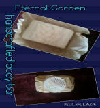

|
Hello one and all. I am introducing you all with a unique body care products which will not only enhance your beauty but will make your skin healthy and forever fresh. We have a whole variety of products ranging from body soaps to lip balms to Potpourri sachets made with different fruits and flowers to suit every kind of skin and keep it moisturized. Dermatologists tell you to wash your face twice day. But what product you use for washing your face makes a huge impact on your skin. If you use natural products while washing your face, it will leave your skin healthier. It can also help you to prevent premature aging and wrinkles. Keeping all the factors in mind, we have made the products using Aloe Vera (known for rejuvenating, healing, or soothing of the skin), Palmate (Palmic oil, known for its deep cleansing properties) and Almond oil (known for treating acne and deep moisturizing the skin), Beeswax (known for softening the skin and providing nourishment), Cocoa butter (which delivers multi-purpose, anti-aging skin benefits), and many more. The products that are used are all naturally produced and mixed together to make one product that has it all. So, all you ladies who love flaunting your beauty and collecting appreciation from time to time, it is your chance to grab the set of organic body care products and feel forever young and beautiful, and you don’t need chemicals anymore! These best skin care products are not costly either. You can easily manage it within your budget. And then when it is bringing back your skin’s moisturizer and giving you a soft skin just like a baby, it can never be a wrong decision. “Don't rely on labels to give you the information you need. Trust only the ingredient list and your gut.” ― Yancy Lael, Glowing: Soulful Skincare |
Handmade Small Soap Vegetable Base |
Large Bath Bombs |
Body Bar in a Jar |
Body Bar |
Potpourri Sachet |
Cocoa Lip Balm |
Vegetable Base |
|  | ||||||
| $3.00 | $6.00 | $10.00 | $9.00 | $4.00 | $3.50 | $6.00 |
| Sorbitol (Moisturizer), Purified Water, Palmate (Palm Oil), Sodium Cocoste (Coconut Oil), Doccule Gylcoside Water, Fragrance Oil, Colorant | Baking Soda, Granulated Citric Acid, Witch Hazel, Almond Oil, Fragrance Oil | Aloe Vera/Mango, Cocoa butters, Vitamin E, Coconut Oil, Beeswax, Fragrance Oil | Aloe Vera/Mango, Cocoa butters, Vitamin E, Coconut Oil, Beeswax, Fragrance Oil | Dried Fruits, Flowers, Fragrance Oil | Aloe Vera/Mango, Cocoa butters, Vitamin E, Coconut Oil, Beeswax, Fragrance Oil | Glycerine, Sorbitol (Moisturizer), Purified Water, Palmate (Palm Oil), Sodium Cocoste (Coconut Oil), Decyl Gylcoside Water, Fragrance Oil, Colorant |